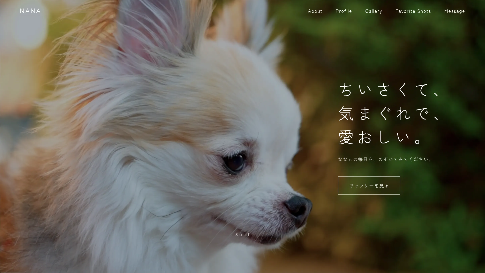

ペット紹介サイト
友達へのサプライズプレゼントとして制作したwebサイトです。
写真素材や動画素材の撮影から、webサイトの企画・公開まで手掛けました。

友達へのサプライズプレゼントで作ったペット紹介サイトです。
ゴール
ななちゃんの魅力を最大に伝え、ファンレターをもらう。写真を見て、癒されてもらう。
単なる写真並べではなく、性格や特徴（ABOUT/PROFILE）を しっかり見せた上で、最終的に「Message（ファンレター）」を 送ってもらう動線を作ることで、飼い主と閲覧者の温かいコミュ ニケーションを生み出すことをゴールとしています。
ターゲット
友達、友達の家族、犬友達、チワワが好きな人
ななちゃんの飼い主である友達やその家族はもちろん、その周りの犬友達や、 SNS等を通じてななちゃんを知った人が「もっとディールな情報を見たい！」と 思った時に癒される場所を目指しました。
コンセプト
愛犬の魅力を世界一伝える紹介サイト
友達の大切な家族であるチワワの「ななちゃん」の愛らしさを詰め込んだ 特化型プロフィールサイトです。「ちいさくて、気まぐれで、愛おしい。」をテーマに、 一目でファンになってしまうような優しく上品なトーンで統一しました。